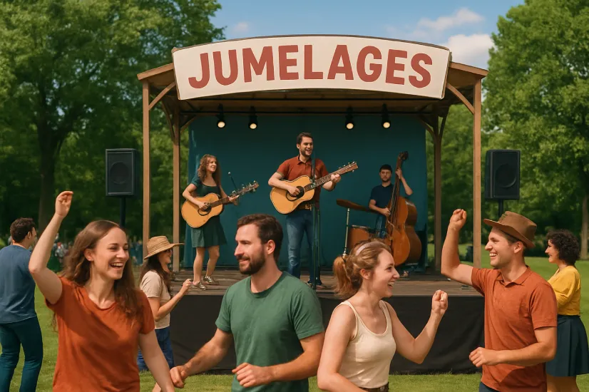
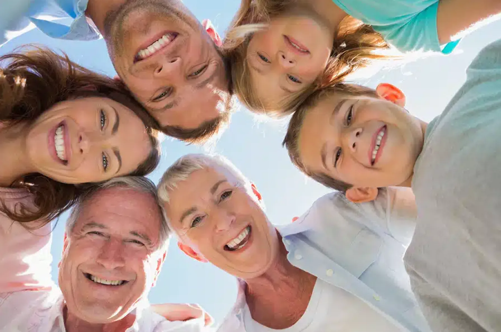
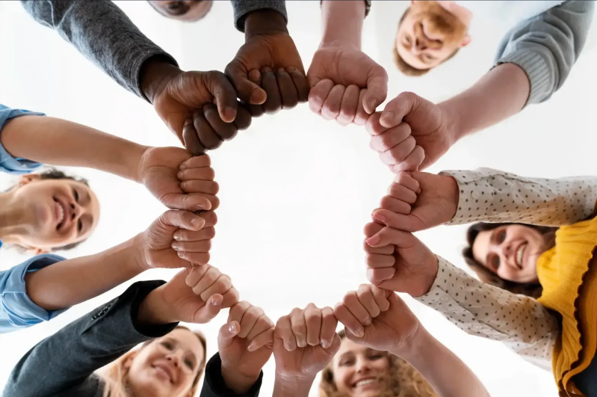
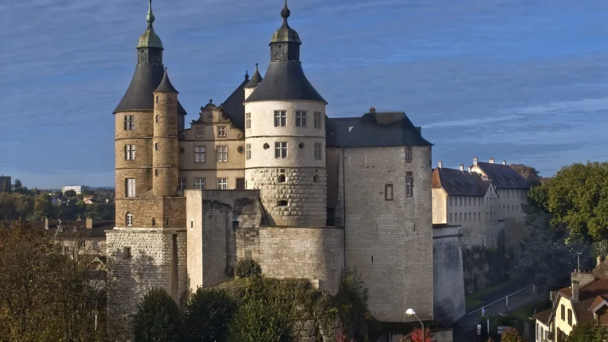

Festival Jumelages

Jumelages est un festivalde musique folk et de chansons régionlaes. Nous voulons vous proposer un événement convicvial, intergénérationnel et qui permet de rassembler autour de la culture régionale et de la musique folk. Nous souhaintons rassembler les familles, à la recherche d'activités culturelles à partager avec leurs enfants, mais aussi les jeunes adultes et les personnes plus âgées.
Le nom "Jumelages" fait écho à l'histoire de Montbéliard et à son jumelage avec la ville allemande de Ludwigsburg. Ce nom évoque la rencontre, le partage, valeurs que le festival souhaite transmettre.

Jumelages défend trois valeurs : l’accessibilité, la convivialité, et l’ancrage local.
L'accessibilité est une valeur centrale pour le festival Jumelages car elle exprime la volonté de proposer un événement ouverts à tous, en rassemblant différentes générations et milieux. Pour renforcer cette accessibilité, le festival est entièrement gratuit et facilement accessible, que ce soit en voiture, à vélo, à pied ou en transports en commun. La programmation restera diversifiée pour plaire au plus grand nombre.
La convivialité est une valeur essentielle du festival Jumelages. L'objectif est de créer une ambiance chaleureuse où toutes les générations peuvent se retrouver et partager un bn moment. Jumelages est un lieu de rencontre, d'échange et de détente, le festival souhaite organiser des ateliers créatifs et des activités familiales.
L'ancrage local est une valeur importante pour le festival Jumelages. Elle montre la volonté de mettre en avant le territoire et ses artistes. Le festival se déroule à Montbéliard, au bord du Doubs.
